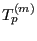

Next: Frequency calculations
Up: Filling and solving the
Previous: Linear static analysis
Contents
For nonlinear calculations the solution is found by iteration. Because a step
is possibly too large to obtain convergence, the option exists to subdivide
the step into a finite number of increments. The size of the initial increment
in a step is defined by the user (line beneath *STATIC,
*DYNAMIC, *VISCO, *HEAT
TRANSFER or *COUPLED TEMPERATURE-DISPLACEMENTS) and also the number of increments can be
controlled by the user (parameter DIRECT). However, in most cases it is
advisable to let the program determine the size of the increments, based on
the convergence rate of the previous increments. The solution in each
increment is obtained by iteration until the residual forces are small enough.
Therefore, the structure of nonlingeo corresponds to the flow diagram in
Figure 172. It lists all subroutines, each line is a subroutine. On
the upper right ``preliminary'' is an abbreviation for five subroutines which
recur often. If a subroutine or a group of subroutines is enclose by square
brackets, it means that it is only run under certain conditions. In detail,
the structure of nonlingeo looks like:
Figure 172:
Flow diagram for subroutine nonlingeo
|  |
- before the first increment
- determine the number of advective degrees of freedom and the number of
radiation degrees of freedom (envtemp.f)
- expanding the radiation degrees of freedom in case of cyclic symmetry
(radcyc.c)
- initialization of contact fields and triangulation of the independent
contact surfaces (inicont.c)
- take into account time point amplitudes, if any (checktime.f).
- calculate the initial acceleration and the mass matrix (specific heat
matrix for transient heat transfer calculations) for dynamic calculations.
(initialaccel.c). This includes:
- determine the load at the start of the increment (tempload.f)
- for thermal analyses: determine the sink temperature for forced
convection and cavity radiation boundary conditions (radflowload.f)
- update the location of contact and redefine the nonlinear contact spring
elements (contact.f)
- update the coefficients of nonlinear MPC's, if any.
- if the topology of the MPC's changed (dependence of nonlinear MPC's on
other linear or nonlinear ones) or contact is involved: call remastruct
- determine the internal forces (results.f).
- construction of the stiffness and mass matrix and determination of the external
forces (mafillsm.f); This is also done for explicit calculations in order to
get the mass matrix.
- subtract the internal from the external
forces to obtain the residual forces;
- solving the system of equations with in spooles.c, preiter.c or any
other available sparse matrix solver. For
explicit dynamic calculations explicit calculation of the solution (no system
needs to be solved). The solution is the acceleration at the start of the
step.
- for each increment
- before the first iteration
- determine the load at the end of the increment (tempload.f)
- for thermal analyses: determine the sink temperature for forced
convection and cavity radiation boundary conditions (radflowload.f)
- update the location of contact and redefine the nonlinear contact spring
elements (contact.f)
- update the coefficients of nonlinear MPC's, if any.
- if the topology of the MPC's changed (dependence of nonlinear MPC's on
other linear or nonlinear ones) or contact is involved: call remastruct.
- prediction of the kinematic vectors
- determination of the internal forces (results.f). The difference between
the internal and the external forces are the residual forces. If the
residual forces are small enough, the solution is found. If they are not,
iteration goes on until convergence is reached. The residual forces are the
driving forces for the next iteration.
- in each iteration
- determine the load at the end of the increment (tempload.f)
- for thermal analyses: determine the sink temperature for forced
convection and cavity radiation boundary conditions (radflowload.f)
- update the location of contact and redefine the nonlinear contact spring
elements (contact.f)
- update the coefficients of nonlinear MPC's, if any.
- if the topology of the MPC's changed (dependence of nonlinear MPC's on
other linear or nonlinear ones) or contact is involved: call remastruct and
redetermine the internal forces (results.f).
- construct the system of equations and determination of the external
forces (mafillsm.f); for explicit dynamic calculations no system has to be
set up, only the external forces are determined (rhs.f).
- subtract the internal from the external
forces to obtain the residual forces (calcresidual.c);
- solving the system of equations with in spooles.c, preiter.c or any
other available sparse matrix solver. For
explicit dynamic calculations explicit calculation of the solution (no system
needs to be solved).
- calculating the internal forces and material stiffness matrix in each
integration point in results.f
- deriving the new residual by subtracting the updated internal forces
from the external forces (calcresidual.c).
- If the residual is small enough iteration ends (checkconvergence.c). The
convergence criteria are closely related to those used in ABAQUS.
- after the final iteration, if output was not suppressed by user input control:
- determining the required results for all degrees of freedom, starting
from
the displacement solution for the active degrees of freedom. This is done in
subroutine results.f, including any storage in the .dat file.
- storing the results in the .frd file. For structures not
exhibiting cyclic symmetry this is performed in routine out.f, for cyclic
symmetric structures routine frdcyc.c is called before calling out. If an
error occurred during the matrix fill the output is reduced to the pure
geometry.
- after the final increment (only if no output resulted in this final
increment due to user input control)
- determining the required results for all degrees of freedom, starting
from
the displacement solution for the active degrees of freedom. This is done in
subroutine results.f, including any storage in the .dat file.
- storing the results in the .frd file. For structures not
exhibiting cyclic symmetry this is performed in routine out.f, for cyclic
symmetric structures routine frdcyc.c is called before calling out. If an
error occurred during the matrix fill the output is reduced to the pure
geometry.
Next: Frequency calculations
Up: Filling and solving the
Previous: Linear static analysis
Contents
guido dhondt
2018-12-15